Programmazione strategica
Strategia
All’interno della pagina “Strategia”, sotto la voce di menù “Programmazione Strategica”, è possibile visualizzare la scheda strategia. La Direzione Strategica esplicita la strategia aziendale in ordine alle prospettive economico finanziaria, clienti interni ed esterni, processi aziendali, apprendimento e crescita, fornendo a tutti gli attori del sistema ATS le linee programmatiche entro le quali dovrà collocarsi l’azione dell’ente per il periodo di programmazione. Allo stesso modo e secondo le medesime prospettive è richiesto ai Direttori di Dipartimento/Distretto ed ai Responsabili di UO di Staff titolari della programmazione di esplicitare la strategia dipartimentale/distrettuale in modo tale da consentire alla Direzione Strategica di valutare il livello di coerenza tra la strategia proposta dai Direttori di Dipartimento/Distretto e la strategia espressa a livello aziendale e di apprezzare la vision dei singoli Direttori e di rendere espliciti i parametri di riferimento per la valutazione delle proposte (obiettivi) operative .
br/>
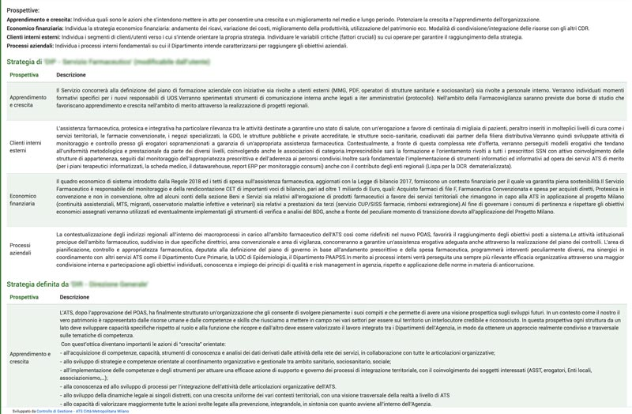
Prospettive
In alto, sotto la voce “Prospettive”, sono indicate le tipologie delle prospettive: economico finanziaria, clienti interni ed esterni, processi aziendali, apprendimento e crescita. Per ognuna è riportata una breve descrizione del significato attribuito ad ogni prospettiva, così da orientare correttamente la formulazione della strategia per ogni prospettiva .
Strategia del CDR
E' riportata la strategia formulata, per ognuna della prospettive, dal CDR ( Direttori di Dipartimento/Distretto, Responsabili di UO di Staff titolari della programmazione).
.
Questa sezione è modificabile dagli utenti che risultano profilati nel ruolo di programmazione strategica per il loro CDR.
Per modificare le informazioni presenti in questa sezione occorre cliccare sulla riga corrispondente, si aprirà una schermata, dove saranno inseribili:
- i processi aziendali, visibili poi nella sezione superiore denominata “Prospettive”
- la strategia da svolgere per quell’area di interesse.
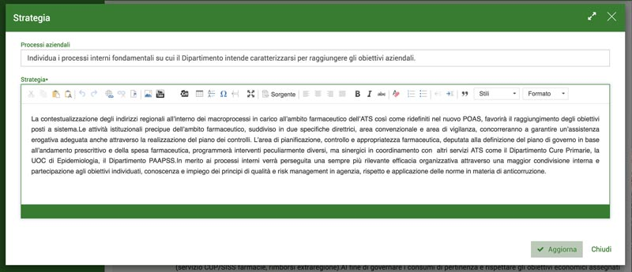
Strategia definita dal livello superiore gerarchico
Questa sezione presenta la tabella che riporta la strategia definita dal livello superiore gerarchico. Essa è modificabile solo dagli utenti abilitati al livello superiore.
Obiettivi CDR
In questa pagina sono riportati gli obiettivi aziendali definiti dalla Direzione Strategica e assegnati al CDR. Sulla base dei vincoli ambientali e di sistema e della Strategia definita a livello aziendale e Dipartimentale, la Direzione Strategica in collaborazione con il Collegio di Direzione definisce gli obiettivi operativi con i relativi indicatori, finalizzati a misurarne il grado di raggiungimento e monitorarne lo stato d’avanzamento nel corso dell’esercizio. Questi obiettivi sono assegnati ai CDR afferenti alla Direzione Strategica (Dipartimenti e UO di Staff). Utilizzando la barra di ricerca, inserendo il testo e/o il codice obiettivo,è possibile eseguire la ricerca degli obiettivi .
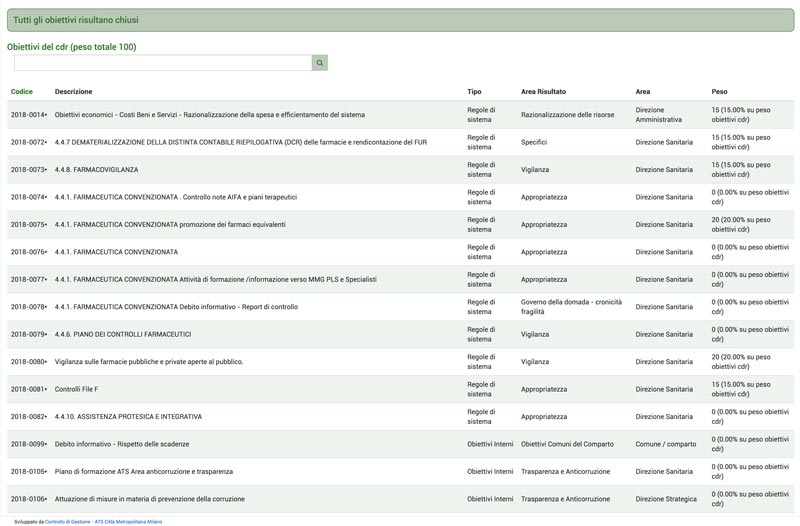
All’interno della tabella sono riportati :il codice e la descrizione dell’obiettivo, il tipo di obiettivo, l’area di classificazione dell'obiettivo , il soggetto istituzionale che ha definito e assegnato l’obiettivo, il peso,espresso in percentuale, assegnato all'obiettivo . Ciascun Responsabile di CDR che riceve l’obiettivo assegna i singoli obiettivi alle UO e al personale direttamente afferente al proprio livello gerarchico (UOC/UOS).
Scheda obiettivo
Cliccando sulla riga di un obiettivo verrà aperta la relativa scheda di gestione dell'obiettivo .
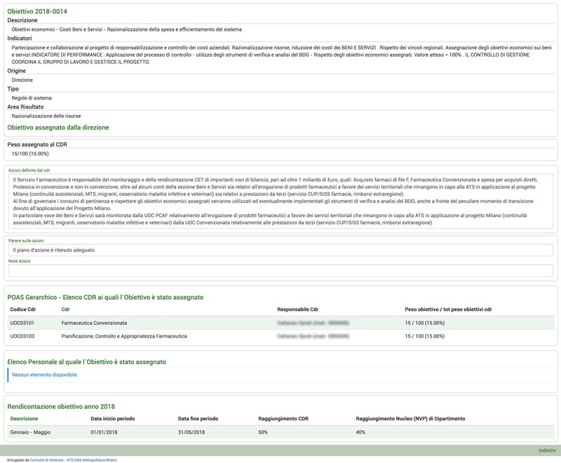
All’interno sono presenti i campi che riportano i contenuti dell'obiettivo: la descrizione dell’obiettivo; gli indicatori per misurare il grado di attuazione dell’obiettivo, il soggetto istituzionale che ha definito l’obiettivo, la tipologia dell'obiettivo e l’area (di risultato) nella quale agisce l’obiettivo.
Inoltre, in base al CDR selezionato, dipartimento o UOC/UOS, verrà visualizzata la descrizione delle azioni che si vogliono attuare per realizzare l’obiettivo.
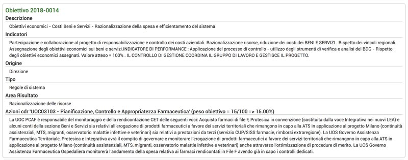
Mentre all’interno del dipartimento non comparirà alcuna azione da intraprendere, in quanto l’incarico viene passato al CDR sottostante.( da rivedere va spiegata e rappresentata la gerarchia dele visualizzazioni e il meccanismo della assegnazione gerarchica degli obiettivi ). Testo grande
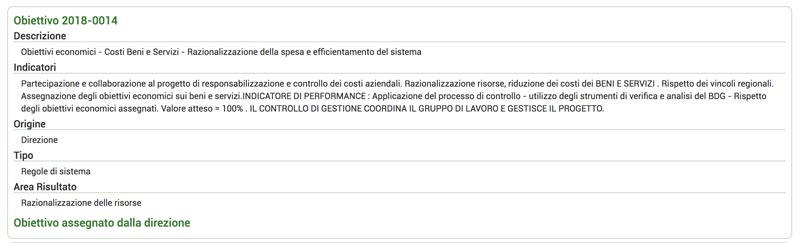
Successivamente viene riportato il peso assegnato all'obiettivo, insieme alle azioni definite dal CDR, un parere e alle note sulle azioni.( Sul Parere, ovvero la fase di approvazione delle azioni da parte del superiore gerarchico va spiegata e documentata)
Nella sezione sottostante viene riportato l’elenco dei CDR ai quali è stato assegnato l’obiettivo.
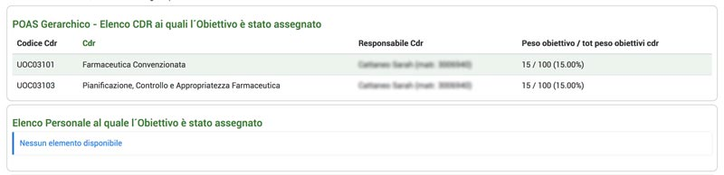
Questo elenco risulterà vuoto se la scheda viene aperta da personale facente parte dell’UOS, in quanto rappresenta il livello più basso della scala gerarchica (Spiegare il meccanismo di consultazione) . Verranno invece visualizzati nell’elenco sottostante i nomi del personale a cui è stato assegnato l'obiettivo.
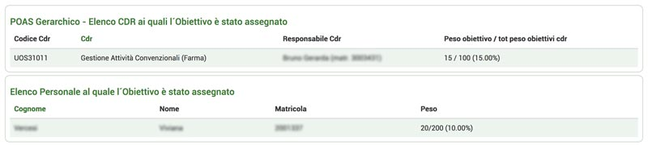
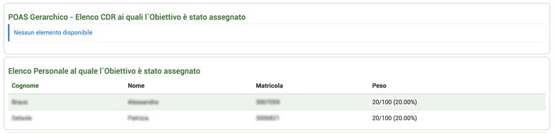
In fondo alla scheda è presente la rendicontazione dell’obiettivo effettuata nell’anno corrente, con riportato: il periodo in analisi, con data di inizio e di fine; la percentuale di raggiungimento di quell’obiettivo espressa dal CDR e dal nucleo di valutazione.
Scheda rendicontazione obiettivo
La rendicontazione degli obiettivi avviene attraverso un processo bottom-up. I livelli gerarchici più bassi dell’organizzazione effettuano per primi la rendicontazione degli obiettivi, fornendo le informazioni, sulle azioni attuate e sui risultati operativi raggiunti, ai livelli superiori mettendoli così in condizione di comprendere I processi operativi attuati all’interno delle strutture organizzative afferenti il proprio Dipartimento e le eventuali criticità espresse dai singoli CDR. Queste informazioni consentono di attivare un reale processo gestione e di controllo operativo, di effettuare agevolmente una sintesi sulle performance e di sviluppare la propria rendicontazione al vertice strategico. La gestione del processo di rendicontazione diventa quindi uno strumento essenziale per la conoscenza ed il governo del Dipartimento. Cliccando sulla riga dell’obiettivo, presente nella tabella della rendicontazione, verrà aperta la scheda in dettaglio della rendicontazione dell’obiettivo.
Nella prima scheda verranno presentate nuovamente le informazioni riguardanti l’obiettivo: gli indicatori necessari per la realizzazione dell’obiettivo, le note attuative, il peso attribuito all’obiettivo, ed i dipendenti associati, con il peso dell’obiettivo consultato rispetto all’insieme totali degli obiettivi assegnati . Questa scheda sarà visualizzabile da qualsiasi CDR appartenente al dipartimento.
N.B. Sarà possibile visualizzare i dipendenti incaricati della realizzazione di quell’obiettivo solo come UOC/UOS.
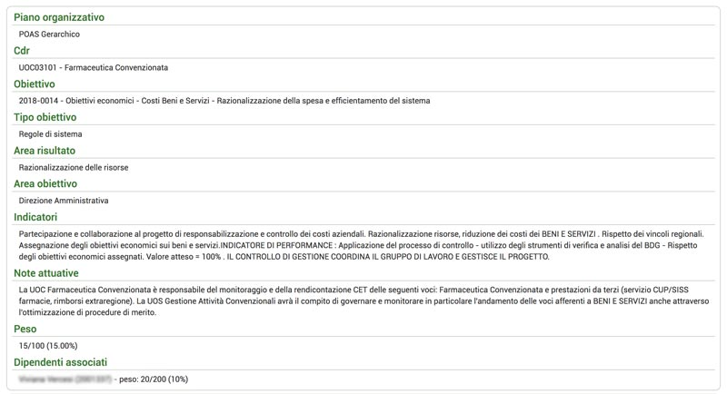
Nella seconda scheda, visualizzabile solamente come UOC/UOS, viene presentata nel dettaglio la rendicontazione aziendale dell’obiettivo( fatta da...…. va spiegato il processo di rendicontazione chi fa e cosa è consultabile e visibile dalle gerarchie e dal personale ) , con: le azioni sviluppate per la realizzazione dell’obiettivo; i provvedimenti adottati; le criticità riscontrate; la misurazione del grado di raggiungimento dell’obiettivo, ovvero, le variabili considerate per misurare il grado di raggiungimento ; il grado di raggiungimento per il periodo di riferimento espresso dal CDR in percentuale; se si ritiene raggiungibile l’obiettivo entro la fine dell’anno; la percentuale di raggiungimento dell’obiettivo secondo il Nucleo di valutazione; ed infine le note scritte dal Nucleo riguardanti quell’obiettivo.
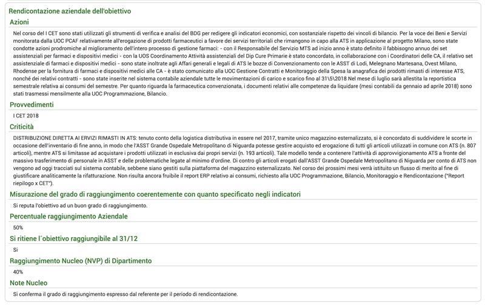
Nella terza sezione, visibile a tutti i CDR, è presente la scheda del referente da poter compilare con: le azioni; i provvedimenti; le criticità; la misurazione del grado di raggiungimento coerente con quanto specificato negli indicatori; se si ritiene raggiungibile l’obiettivo entro la fine dell’anno e la barra per la selezione della percentuale di raggiungimento.
immagine
L’ultima sezione, visibile solo da dipartimento(???????????), è dedicata al nucleo di valutazione.
In questa sezione è visibile la percentuale di raggiungimento dell’obiettivo espressa dal Nucleo e le note relative ad esso.
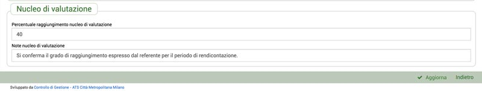
Una volta apportate le modifiche cliccare su “Aggiorna” per salvarle, oppure annullarle tramite l’apposito pulsante.
Cruscotto
Per accedere a questa interfaccia è necessario nel menù cliccare sull’icona del grafico a torta, a fianco degli Obiettivi CDR.
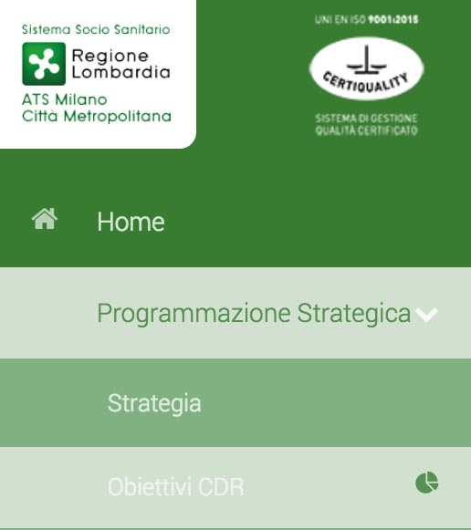
La prima scheda, dove si viene automaticamente indirizzati, presenta un manuale di utilizzo del cruscotto, con inserite quelle che sono le informazioni inerenti l’assegnazione degli obiettivi al CDR e l’assegnazione degli obiettivi al personale.
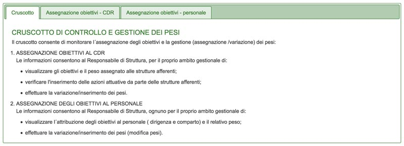
Assegnazione obiettivi - CDR
Nella scheda dedicata all’assegnazione degli obiettivi al CDR è presente una tabella con riportati i CDR sottostanti nella scala gerarchica con l’elenco dei diversi obiettivi assegnati al CDR visualizzato. Per ogni obiettivo è quindi visualizzato il peso assegnato ad esso.
Inoltre è possibile vedere per ogni obiettivo se sono state specificate le azioni da intraprendere per raggiungere quell’obiettivo, oppure se non sono ancora state definite tali azioni.
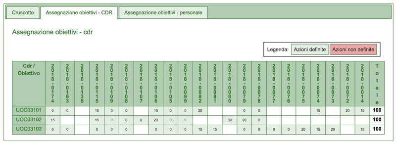
Assegnazione obiettivi - personale
Anche questa scheda presenta una tabella, nella quale sono indicati i diversi obiettivi assegnati al CDR visualizzato, indicando le persone alle quali sono stati assegnati, con il peso dello specifico obiettivo rispetto agli altri assegnati a quella determinata persona. Inoltre viene indicato per ogni obiettivo se è stato assegnato e se è stato confermato dalla persona assegnata.
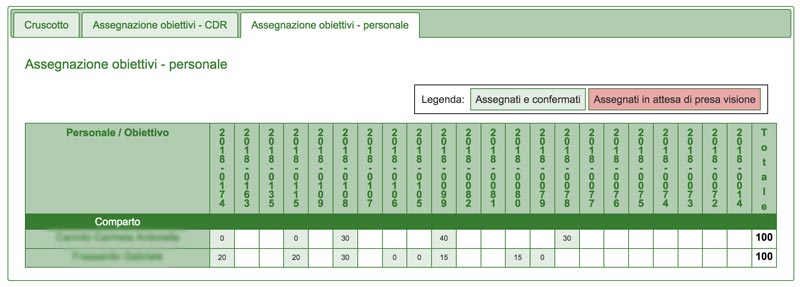